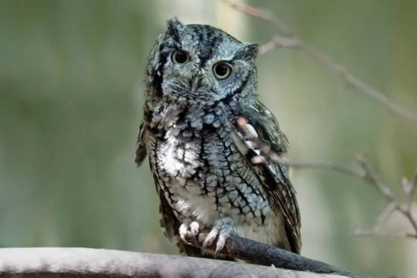

The Eastern Screech-Owl, renowned for its exceptional adaptability, is frequently observed across a range of locales in Eastern North America, extending into Mexico.
Notably resilient in the face of human presence, this avian species thrive even amidst urbanized landscapes. Distinguished by two distinct colour variations, the southern populations exhibit reddish hues while their northern counterparts boast greyish tones.
Researchers posit that these variations are intricately linked to the colours prevalent in their native woodland habitats, suggesting an evolutionary adaptation.
The Eastern Screech-Owl, renowned for its solitary nature, tends to form pairs during the breeding season in April. To establish a lifelong connection, these owls engage in bonding rituals during courtship.
After mating, they construct nests within the hollow trunks of dark and dense forests. While the Eastern Screech-Owl typically exhibits monogamy, there have been instances where males mate with multiple females during a single breeding season, leading to the eviction of the initial female and subsequent laying of a new clutch of eggs.
As a highly adaptable predator, the Eastern Screech-Owl preys upon a diverse range of creatures, depending on its surroundings. In Minnesota, it primarily hunts small mammals such as voles, mice, shrews, and rats, but also consumes significant quantities of insects like beetles and moths, as well as other invertebrates including spiders, worms, and snails, particularly when mammal populations are low.
Additionally, it feeds on small reptiles, birds, and amphibians, and occasionally partakes in fruits and berries. Operating predominantly under cover of darkness, this nocturnal hunter relies on its acute hearing to locate its prey. After consuming its prey whole, the owl regurgitates indigestible remains such as fur, feathers, and bones in the form of pellets.
Although the Eastern Screech-Owl is not currently classified as endangered, it shares vulnerabilities common among many owl species. These include the risk of poisoning through contaminated prey and the threat of habitat disruption or destruction. As per the IUCN’s Red List, the Eastern Screech-Owl is currently designated as “Least Concern.”